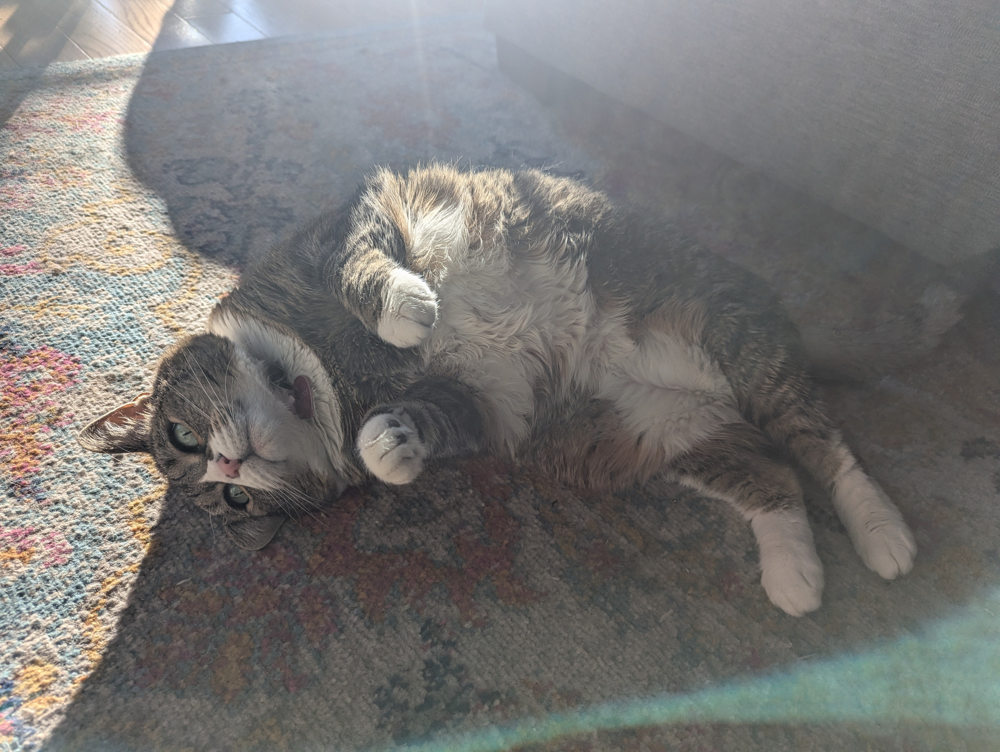

I earned my Associate degree last May from Northwestern Community College, part of CTSTATE. In Connecticut, if you are a first time college student you can earn your Associate degree for free!
I live in New Milford Connecticut, and have lived there my whole life. I commuted 45 minutes to my last college, so I am used to it....I am so tired of driving!!!!
I have always been interested in art history and the ways people have expressed themselves over time! I really love my major.

This is a picture of my cat, Carla. She looks cute but she is mean sometimes.
I do not have a favorite class. I really love learning, and I have found that I learn something new every day in each of my classes. I am very happy with my current classes and professors, and I will miss them next semester!